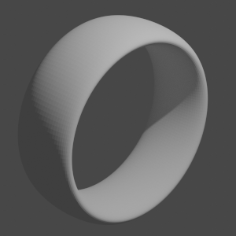
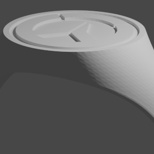
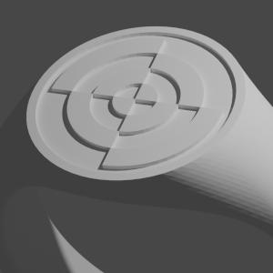
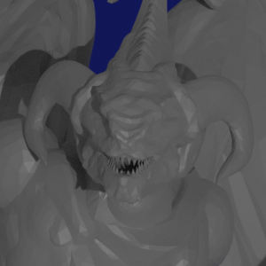
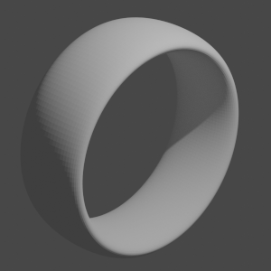
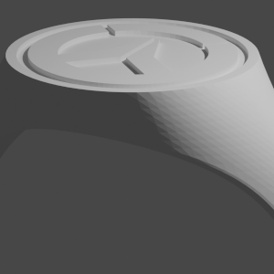
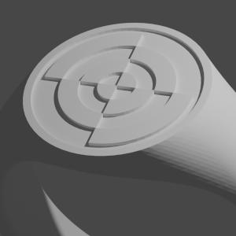
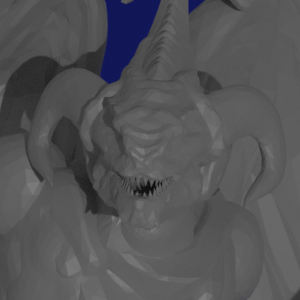

Intro


Sono Calogero Bonaccolto, vengo da Raffadali, in provincia di Agrigento. Mi sono diplomato come Ragioniere e Perito Tecnico Programmatore all' ITC "Leonardo Sciascia" e subito dopo mi sono messo alla ricerca di un lavoro ed ho acquisito esperienze come Video Editor e Photo Editor con l'agenzia fotograica Calogero Grizzafi. Grazie all'amore per Dungeons & Dragon, mi sono messo a creare modelli 3d di pedine, torre per lanciare i dadi e altro (alcuni rendering li troverete nella sezione Lavori).
Grazie alla scuola superiore ho imparato Visual Basic, il mio primo linguaggio di programmazione, ma da lì ho imparato anche HTML, MySQL e CSS. Con le esperienze universitarie ho imparato ad usare C e Java, che sto ulteriormente approfondendo.
Attestati
Stage di formazione per migliorare: capacità, competenze e acquisizioni informatiche presso EUREKA S.R.L. Di Canicattì in data 12/10/07.
Stage di informazione "Alternanza Scuola-Lavoro" preso INPS di Agrigento in data 15/01/09.
Corso di perfezionamento universitario di 1500 ore “Attività didattiche nel laboratorio multimediale” presso For.Com. Consorzio Interuniversitario in data 21/04/11.
Corso della durata di 600 ore, 120 ore di lingua LIS, stage laboratorio LIS di 180 ore presso la MAICO S.r.l. svolto con CE.SI.FO.P. di Agrigento conluso in data 19/11/13.
Certificato ECDL IT-Security Livello Specialised conseguito in data 04/10/14.
Corso di Web Design presso Società Cooperativa "Il Sestante" di Favara in data 20/11/15.
Corso di 300 ore sull'uso didattico della LIM concluso in data 17/06/2017 con i seguenti argomenti:
- Componenti hardware e software del sistema LIM;
- Interfaccia e strumenti della LIM;
- Risorse digitale e strategie per la creazione di lezioni interattive;
- La LIM per la didattica inclusiva.
Corso di Formazione come Programmatore Java Junior (Progetto GPS) organizzato da Collegio Universitario ARCES di Palermo.
Lavori
Questi sono alcuni esempi di modelli 3D.


.png "Elf_Mage(F)")


.png "Undead_Necromancer(M)") 



Contatta
Se vuoi contattarmi, puoi farlo tramite i social-link sottostanti, oppure tramite il form.


.png "Elf_Mage(F)")


.png "Undead_Necromancer(M)")
{kind=link}
{kind=link}
{kind=link}
.png){kind=link}